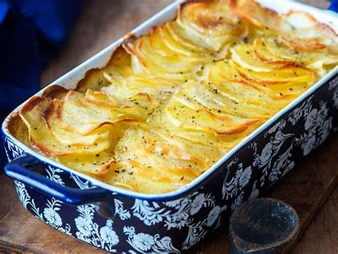

Gratin Dauphinois

INGRÉDIENTS POUR 6 PERSONNES
 |
1l de lait |
| 2 gousses d'ail | |
 |
100g de beurre |
 |
1.5kg de pomme de terre |
 |
Sel |
 |
Poivre |
| 30cl de crème | |
 |
Muscade |
PRÉPARATION
|